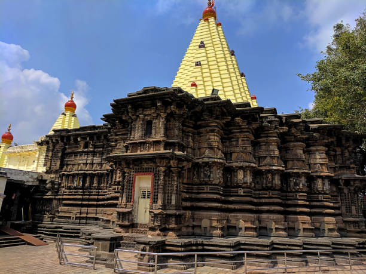
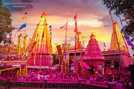
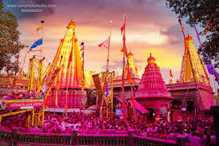

Kolhapur city is situated on the banks of Panchganga river and is surrounded by Sahyadri mountain ranges. It is a city known for its historical forts, temples and royal places of erstwhile royals. It is one of the best places to explore the splendor and magnificence of India.Kolhapur is about 387 km from the Mumbai, the financial capital of India and is famous for the Indian handcrafted leather slippers the kolhapuri chappals and its unique local jewelry a special type of necklace called Kolhapuri Saaj.Kolhapur is famous for the shri. Mahalakshmi Temple and according to the popular belief goddess Mahalakshmi startedresiding in kolhapur following a quarrel with her husband lord Vishnu. Kolhapur derived its name from a mythologicalevent legend says, Goddess Mahalakshmi killed a demon named Kolhasur who used to oppress the local people. Before dying,the demon wished that the place be named after him and so the region got to be known as Kolhapur.The Bhonsle dynasty was the ruling family of kolhapur pricely state and they pride themselves for being the descendantsof Chhatrapati Shivaji Maharaj the Great. King Chhatrapati shahaji II Puar was the last ruler of the state of Kolhapur. Down the years the rulers of Kolhapur promoted theatre, wrestling and other crafts. Today, Kolhapur is a modern andindustrialized city.Situated at an altitude of 1900 feet, Kolhapur enjoys a pleasant climate for the major portion of the year best time to visit Kolhapur is from October to March, but avoid the summer months of April and May when temperature is on a rise.People from all religious backgroun harmoniously. Hinduism is followed by majority of residents in kolhapur and Marathi is a mother tongue of kolhapuri people. Along with Marathi, Hindi and English languages are commonly spoken. Festivals like Diwali, Ganesh Chaturthi, Navaratri and Holi Known as the festival of colors is celebrated with great enthusiasm and the Yes Kolhapuri People are Extremely Hospitable and Welcoming.
 
